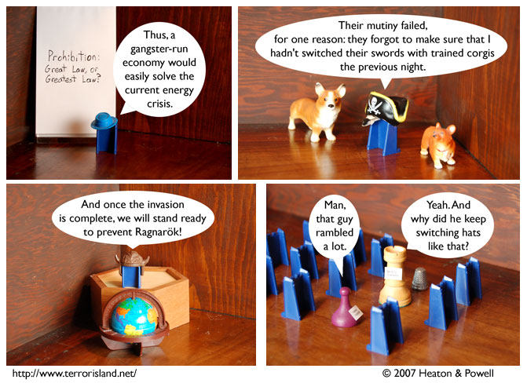

Strip #129
— Monday, April 9, 2007
Sadly, preventing Ragnarok is impossible
Notes, Thoughts, &c.
Ben’s Notes
You know, I really like the idea of failed mutinies. I can’t think of a single successful mutiny in a work of fiction that I liked.
Lewis’s Notes
Sometimes when I go grocery shopping, I think, “I don’t need a cart” But the weird thing is, I only have the normal number of arms (2), so I have no idea why I think I can do that. Last time, I dropped a bottle of shampoo, and had to put all the things I was buying down, reorganize them, and pick them up again, so I guess I learned my lesson the moderately easy way.